Multi-channel CNT-based biosensor for simultaneous detection of six molecular biomarkers linked to diabetes and cancer. Integrates microfabrication and circuit analysis. Prototype under review by Jadoo Technology.
MRI phantom fabrication across pH conditions for cardiac metabolic imaging (creatine studies)
AAV-based gene therapy experiments in murine models evaluating in vivo delivery and expression
qPCR on mouse liver samples; ELISA and tissue processing to evaluate therapeutic outcomes
Jan 2026 – present
Research Associate
Center of CRISPR Target Discovery, Innovative Genomics Institute — Berkeley, CA
Executed molecular cloning and pooled CRISPR screening workflows, including gRNA library preparation, DNA assembly, bacterial culture expansion, PCR, gel electrophoresis, and sequencing-based construct validation
Supported CRISPR-Cas9 knockout screen preparation by maintaining plasmid library quality, preserving guide RNA representation, and preparing samples for downstream NGS-based readout
Processed genomic DNA samples and amplified integrated sgRNA cassettes from screened cell populations to enable quantitative comparison of guide enrichment and depletion across experimental rounds
Interpreted Sanger sequencing and NGS-related results to confirm plasmid identity, guide sequence accuracy, and screening-library performance
Collaborated with cross-functional research teams under established SOPs to complete CRISPR screening service requests with strong attention to sample tracking, quality control, and reproducibility
Oct 2025 – Present
Microbiologist Intern
Nam Khoa Biotek, Ho Chi Minh City, Vietnam
Processed clinical patient samples including blood, lung fluid, genital fluid, and human waste specimens using microbiological diagnostic workflows for pathogen identification
Performed Gram staining, Ziehl-Neelsen staining, microscopic examination, and TB screening to evaluate bacterial morphology, acid-fast organisms, and infection-related findings
Conducted antibiotic susceptibility testing, MIC assays, and antibiogram preparation on ~30 patient samples/day to support treatment decisions for partner hospitals across Ho Chi Minh City
Prepared bacterial cultures across multiple media types, including selective environments for organisms such as H. pylori, matching culture conditions to suspected pathogen profiles
Supported quality control and turnaround during high-volume periods and staff shortages, contributing to preliminary clinical reports with a four-member laboratory team
UC Berkeley · GPA 4.0De Anza College · GPA 4.0 · Student Athlete of the Year
Bioinstrumentation · Embedded systems · Signal processing · Apr 2026
The G"air"y — Differential Pressure Spirometer with Analog Front End
A fully functional, low-cost lung-function analyzer built from scratch that measures clinically relevant FEV1 and FVC values with an average error of ~5.8% compared to a gold-standard commercial device. The system integrates a Venturi-tube pneumotachograph, a precision analog signal chain (MPX2010DP → INA163 → LM324 bandpass filter → Arduino Mega ADC), and a Python data-acquisition pipeline with Bernoulli-based flow computation — all wrapped in a user-friendly interface with a 3-LED countdown and LCD result display.
~5.8%
Avg FEV1 error vs gold standard
~148×
Front-end gain
100 Hz
Sampling rate
F = 1.1
Noise figure (INA163)
SNR/√1.1
SNR retained vs thermal limit
10-bit
ADC resolution (prudent rule)
Clinical motivation
Spirometry is the standard pulmonary function test for diagnosing and monitoring obstructive and restrictive lung disease.
COPD was the fourth leading cause of death worldwide in 2021, while asthma affected an estimated 363 million people in 2023.
The project goal was to make a lower-cost device that still reports clinically meaningful spirometry metrics.
The two key metrics are:
FEV1 (Forced Expiratory Volume in 1 second) — total air exhaled in the first second of a maximal forced exhalation, in litres.
FVC (Forced Vital Capacity) — total air exhaled over the full forced exhalation maneuver.
FEV1/FVC ratio — the key diagnostic screen: a ratio below 0.7 indicates obstructive disease (asthma, COPD); FVC below 80% predicted signals restrictive disease. Lower FEV1% corresponds to increasing severity.
Clinical spirometers commonly cost $1,000-$3,000.
Portable home monitors are often $50-$150.
This build tested whether a sub-$30 architecture could approach useful accuracy with careful signal conditioning and calibration.
Physics: from pressure to flow to volume
We chose a 3D-printed Venturi tube because it is inexpensive, easy to fabricate, and maps pressure drop to flow through well-known fluid mechanics.
The Venturi narrows the flow path, accelerating air and creating a measurable pressure drop between the wide inlet and narrow throat.
The design uses d1 = 26 mm and d2 = 8 mm, then converts pressure difference into flow using Bernoulli and continuity.
The governing derivation combines Bernoulli's equation with the continuity equation:
Volume V(t)V(t) = ∫₀ᵗ Q(τ) dτ → FEV1 at t=1s, FVC at end of breath
Parameters: ρ = 1.225 kg/m³ (air), A₁ = π(0.013)² m², A₂ = π(0.004)² m². Trade-off: the Venturi model assumes laminar, incompressible flow — 3D-printed surfaces introduce roughness and dimensional imperfections that cause minor turbulence and measurement scatter, contributing to the ~5.8% average error.
Tube design
The airflow path uses a 3D-printed Venturi tube so the pressure sensor can measure the pressure difference between the wider inlet and narrow throat.
The throat increases airflow velocity and lowers local pressure, producing the pressure drop used in the Bernoulli flow calculation.
Separate nozzle pieces were modeled so the mouthpiece geometry could be iterated without redesigning the full Venturi body.
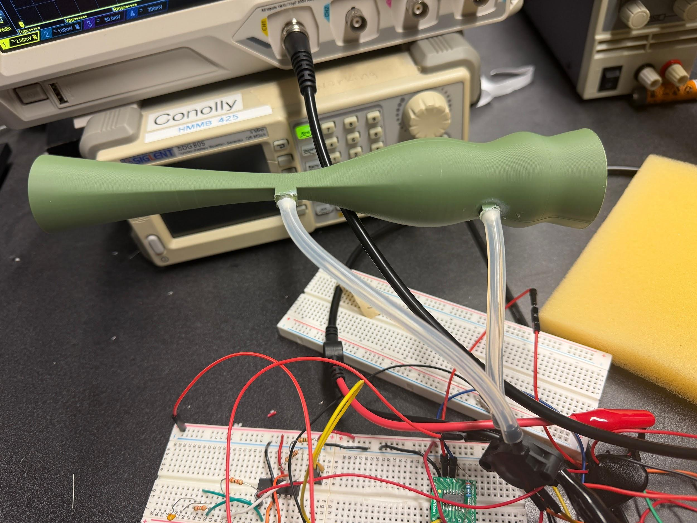
Close-up of the working Venturi tube with tubing attached at the pressure taps used for differential pressure measurement.
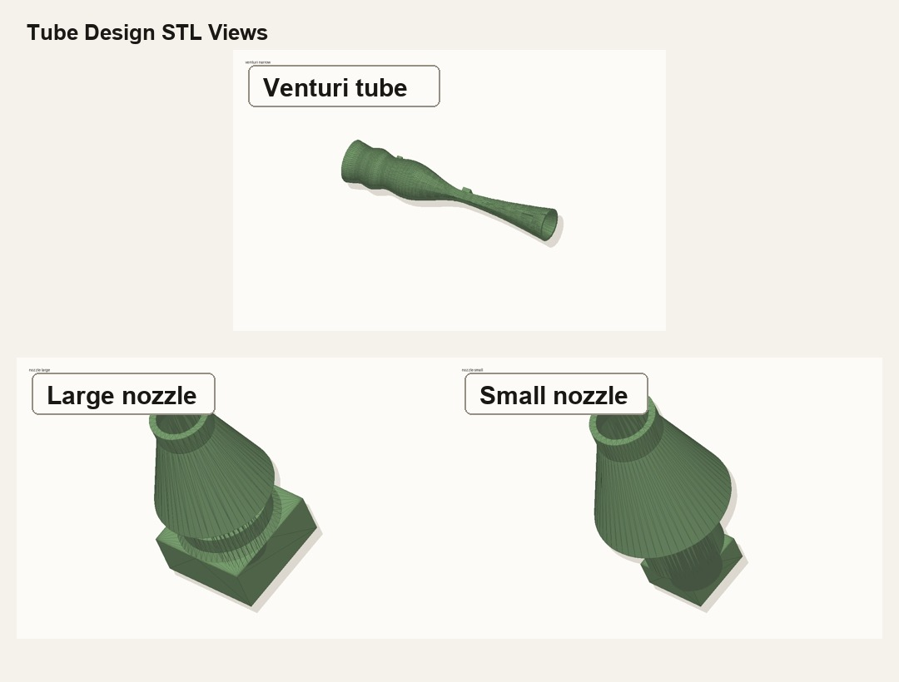
Rendered STL views of the Venturi tube and the two nozzle pieces used for the spirometer airflow path.
Analog signal chain
Forced breathing produces small pressure-dependent sensor voltages, roughly millivolt-scale before amplification.
The Arduino ADC cannot resolve that signal cleanly without amplification, common-mode rejection, and anti-aliasing.
The front end therefore uses a pressure sensor, instrumentation amplifier, active filters, and Arduino sampling as one coordinated chain.
1
MPX2010DP — differential pressure sensor
Piezoresistive Wheatstone-bridge sensor with 2.5 mV/kPa sensitivity and 0–10 kPa operating range. Source impedance Rs = 1,400–3,000 Ω (assumed Rs = 2,000 Ω for noise analysis). Sensor bandwidth: 349.8 Hz (10%–90% response time), well above the 40 Hz signal band. The sensor's differential output feeds directly into the INA163's instrumentation inputs, providing common-mode rejection of environmental noise before any amplification.
2
INA163 instrumentation amplifier — gain ~148× (Rg = 40.6 Ω)
The INA163 was selected for optimal noise matching with the sensor's ~2 kΩ source impedance. Key specs: voltage noise en = 1 nV/√Hz, current noise in = 0.8 pA/√Hz, equivalent noise resistance Rn = en/in = 1,250 Ω. The noise figure F quantifies SNR degradation introduced by the amplifier:
An F of 1.1 means the INA163 contributes only ~10% additional noise power beyond thermal — excellent for a low-cost component. The INA163 also rejects 60 Hz common-mode interference via its CMRR: at the operating gain (~148×, Rg = 40.6 Ω), CMR ≈ 105 dB, attenuating V_common-mode by a factor of ~8×10⁻⁴ before the signal even reaches the filter stage.
A two-stage active filter using LM324 op-amps removes DC drift and out-of-band noise. Stage 1 (HPF, fc = 0.05 Hz): C1 = 2.2 µF, R1 = R2 = 1.5 MΩ — removes sensor DC offset and very slow drift. Stage 2 (LPF, fc = 40 Hz): R3 = R4 = 3.6 kΩ, C2 = 1.1 µF — this stage doubles as the anti-aliasing filter (AAF), attenuating frequencies that would alias when sampled at 100 Hz.
Sampling rate derivation using the Prudent Nyquist rule (signal bandwidth BW = 15–25 Hz, physiologic breathing; set to 30 Hz system BW, AAF at 40 Hz):
// Prudent Nyquist: fs > BW(1 + A^(1/N))// 2nd-order filter (N=2), attenuation A = (fs/fc)²f_s,min = 2·BW + BW·A^(1/N) = 30 + 15·3^(1/2) ≈ 55.98 Hz// Chose 100 Hz for additional aliasing attenuation (3rd order)// Sensor SNR = 55 → need 10 bits (Prudent Rule: bits = SNR/6)Arduino Mega ADC: 10-bit, fc = 40 Hz → ✓ meets both requirements
4
Arduino Mega — 100 Hz precise sampling + serial streaming
The Arduino samples the conditioned analog signal at A0 with microsecond-accurate timing (Ts = 10,000 µs, using micros()-based busy-wait loop rather than delay() to avoid jitter). A 4-second baseline window streams "B,{adc}" samples to Python before issuing a "START" marker, then streams 10 seconds of raw ADC values at 115,200 baud, followed by "END". This architecture offloads the computationally expensive Venturi flow calculation to Python while the Arduino handles real-time sampling and UX.
Prototype build
The full prototype combines the airflow path, sensing hardware, analog conditioning circuit, Arduino control board, LCD, LED countdown interface, and laptop acquisition workflow.
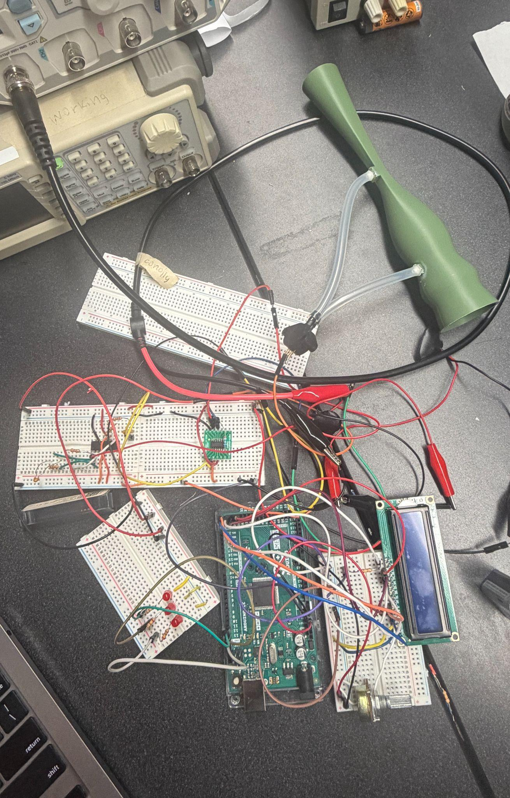
Bench prototype showing the 3D-printed Venturi tube, differential pressure tubing, MPX2010DP pressure sensor, breadboarded analog front end, Arduino Mega, LCD display, LED countdown board, and lab instrumentation.
Why these components?
Venturi tube geometry: d1 = 26 mm inlet and d2 = 8 mm throat created a measurable pressure drop while staying large enough for comfortable forced exhalation. This was easier and cheaper to 3D print than a Fleisch capillary bundle.
MPX2010DP pressure sensor: 0-10 kPa range covers expected forced-expiration pressure without saturating, 2.5 mV/kPa sensitivity gives a measurable bridge output, and ~350 Hz sensor bandwidth is well above the 15-25 Hz breathing signal band.
INA163 instrumentation amplifier: selected because the sensor output is differential and millivolt-scale. With Rg = 40.6 ohm, gain is about 148x, CMRR rejects shared 60 Hz pickup, and the 1 nV/sqrt(Hz) voltage noise works well with the sensor's ~1.4-3.0 kOhm source impedance.
Gain choice: high enough to lift the pressure signal into the Arduino ADC range, but not so high that strong exhalations immediately rail at 5 V. This was the main gain-vs-saturation tradeoff.
LM324 filter stages: chosen because they were available, low-cost, and adequate for the low-frequency spirometry band. The 0.05 Hz high-pass removes DC drift; the 40 Hz low-pass removes out-of-band noise and acts as the anti-aliasing filter.
Arduino Mega: chosen for a simple 10-bit ADC, stable 100 Hz sampling with micros() timing, and enough I/O for LCD, LEDs, and serial data transfer.
Python acquisition: used for the heavier math: baseline correction, pressure-to-flow conversion, FEV1/FVC integration, and live plotting. Keeping this on the laptop made the embedded code simpler and easier to debug.
LTspice model
The analog front end was modeled before breadboarding to confirm the preamp and filter stages matched the spirometry signal band.
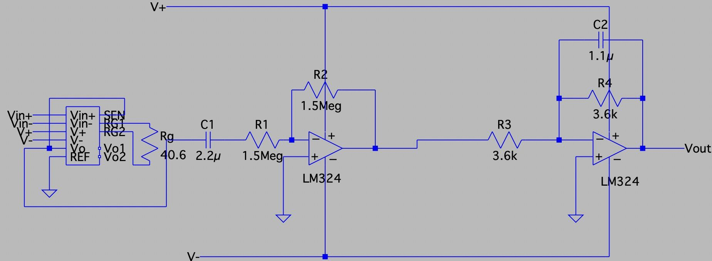
LTspice signal-chain model showing the INA163 preamplifier followed by LM324 filtering: a 0.05 Hz high-pass stage for drift removal and a 40 Hz low-pass stage for noise reduction and anti-aliasing.
Python data acquisition & signal processing pipeline
Serial communication with the Arduino at 115,200 baud.
Dynamic baseline calibration before each breath trial.
ADC-to-voltage, voltage-to-pressure, and pressure-to-flow conversion.
FEV1/FVC integration from the computed flow trace.
Real-time plots for voltage, pressure, and flow during debugging.
Validation plan from the proposal and GitHub docs: compare against a commercial spirometer and use a calibrated differential pressure reference to check waveform shape, amplitude, and integrated volume.
1
Dynamic baseline calibration
Python receives 4 seconds of "B,{adc}" baseline samples before any breath. It computes mean baseline voltage and runs the full Venturi equation on each baseline sample to establish the max baseline flow. The adaptive threshold is set to max(0.05, 1.2 × max_baseline_flow) L/s — this dynamically rejects sensor noise and motion artifact regardless of circuit-to-circuit variation, rather than using a hardcoded threshold.
baseline_voltage = mean(baseline_voltages)
max_baseline_flow = max(|Q(v)| for v in baseline_voltages)
flow_threshold = max(0.05, 1.2 × max_baseline_flow)
// Breath detection only starts when |Q| > threshold
2
ADC → voltage → pressure → flow conversion
Each ADC value is converted through the full signal chain in reverse to recover physical flow rate. Key constants: VREF = 5.0 V, SENSITIVITY = 0.0025 V/kPa, INA163 GAIN ≈ 148, ρ = 1.225 kg/m³.
Volume is computed as the discrete integral of flow over time, implementing V(t) = ∫Q(τ)dτ numerically at DT = 0.01 s (100 Hz). FVC integration stops automatically when flow stays below threshold for 20 consecutive samples (~0.2 s) — this detects the physiological end of exhalation robustly without requiring a fixed recording window.
// FEV1: integrate first 1 second of breathfev1_end = min(start_idx + int(FS × 1.0), end_idx)
FEV1 = Σ |flows_Ls[i]| × DT for i in [start_idx, fev1_end)
// FVC: integrate until flow drops below threshold for 20 samplesbelow_count = 0
for i in range(start_idx, len(flows)):
if |flows[i]| > threshold: below_count = 0
else:
below_count += 1
if below_count ≥ 20: end_idx = i − 19; break
FVC = Σ |flows_Ls[i]| × DT for i in [start_idx, end_idx)
// Send results back to Arduino for LCD display
ser.write(f"R,{fev1:.2f},{fvc:.2f}\n".encode())
4
Real-time live plotting — 3 simultaneous windows
Three matplotlib figures update in real time during recording (every 50 ms): raw voltage (V), calibrated pressure (kPa), and computed flow rate (L/s). This lets the operator verify signal quality mid-breath — a critical debugging tool when tuning gain and threshold. Post-test, the script prints peak-to-peak voltage, pressure range, and flow range for manual SNR verification.
User experience — LED countdown + LCD display
The Arduino firmware guides the user through a repeatable test sequence:
①
Baseline (4 s) — all LEDs off, LCD: "Waiting…"
Silent 4-second calibration window. The user stands still with the mouthpiece in hand. Arduino streams 400 baseline ADC samples to Python at 100 Hz.
②
Countdown — LEDs light up 1 → 2 → 3, LCD: "Blow in 3/2/1"
Each second one more LED illuminates, giving the user a clear visual and textual countdown to prepare for maximal forced exhalation. The three-LED progression (setCountdownLeds(1), (2), (3)) gives an unambiguous "get ready" cue even in a noisy clinical environment.
③
Recording — all LEDs off, LCD: "Blow now! / Time left: N"
LEDs all extinguish simultaneously as the "Blow now!" cue appears. LCD shows a live countdown of remaining recording time. The Python flow-detection threshold prevents any motion artifact before the breath starts from being counted.
④
Results — all 3 LEDs flash 5×, LCD: "FEV1: X.XX L / FVC: X.XX L"
After Python computes FEV1 and FVC and sends them back via serial ("R,{fev1},{fvc}"), the Arduino parses the result, displays it on the 16×2 LCD, and flashes all three LEDs 5 times as a completion confirmation. The device then waits for the next trigger.
// LED countdown sequence (spirometer_mega_controller.ino)setCountdownLeds(1); delay(1000); // "Blow in 3" — LED 1 onsetCountdownLeds(2); delay(1000); // "Blow in 2" — LEDs 1+2 onsetCountdownLeds(3); delay(1000); // "Blow in 1" — all 3 onallLedsOff(); // "Blow now!" — all off → START
Serial.println("START"); // trigger Python recording// ... 10 s recording window ...
Serial.println("END");
flashLeds(3, 200, 200); // "calculating" flash// ... wait for Python R,fev1,fvc response ...flashLeds(5, 120, 120); // result confirmed!
Demo video: LED-guided spirometer workflow with Arduino control and live acquisition
Measured results vs gold standard
Validated FEV1 against a Nascool commercial spirometer across 10 repeated trials on the same subject.
Average FEV1 error was approximately 5.8%.
The results are promising for a low-cost prototype, while still leaving room for production-level calibration and mechanical refinement.
Trial
Gold standard FEV1 (L)
G"air"y FEV1 (L)
Error (%)
FVC (L)
FEV1/FVC
Diagnosis
1
3.12
3.19
−2.24
5.12
0.62
borderline
2
2.89
2.48
+14.19
4.03
0.62
borderline
3
3.31
3.45
−4.23
4.21
0.82
healthy
4
3.34
3.53
−5.69
4.94
0.71
healthy
5
3.46
3.49
−0.87
4.91
0.71
healthy
6
3.45
3.33
+3.48
5.70
0.58
borderline
7
3.54
2.92
+17.51
4.67
0.63
borderline
8
3.35
3.17
+5.37
3.48
0.91
healthy
9
3.40
3.42
−0.59
4.01
0.85
healthy
10
3.30
3.44
−4.24
4.62
0.74
healthy
Average
3.24
~5.8% avg error
4.57
—
—
All FEV1/FVC ratios above 0.70 correctly returned a "healthy" result. Trials with borderline ratios (0.58–0.63) highlight the device's sensitivity to the lower end of the clinical threshold — where more data and calibration would be needed for a production device.
Design trade-offs & honest limitations
Venturi vs Fleisch pneumotachograph: The Fleisch uses a bundle of capillaries to enforce laminar flow and a highly linear ΔP–Q relationship. The Venturi is far cheaper and easier to 3D print, but rough 3D-printed surfaces and imperfect throat dimensions introduce turbulence that the Bernoulli model doesn't account for — a primary source of the ~5.8% error.
Gain vs saturation: Increasing INA163 gain improves SNR for mild breathers but risks ADC saturation on forced maximal exhalations (which can produce voltages approaching the 5 V ADC rail). The Rg = 40.6 Ω choice (~148×) was optimised for the expected healthy breathing range.
Low-sensitivity sensor: The MPX2010DP at 2.5 mV/kPa was chosen for cost; higher-sensitivity sensors (e.g. MPXV7002DP reference device) would reduce the amplifier gain required and lower overall noise floor.
Single-axis measurement: The device only measures exhalation flow. Clinical spirometers also capture inhalation loops for full flow-volume loop analysis.
Temperature/humidity effects: Air density ρ is assumed constant at 1.225 kg/m³. In practice, exhaled air is ~37°C and ~100% humidity, affecting ρ and viscosity — a source of systematic bias not corrected in this implementation.
Team
Built with Lily Duong and Ryu Suzuki as part of the UC Berkeley bioinstrumentation lab sequence.
Personal contributions included system integration, Arduino control logic, Python data acquisition, signal-chain debugging, and report/presentation development.
Team skills strengthened: rapid prototyping, experiment documentation, troubleshooting under time pressure, and translating circuit behavior into a usable biomedical workflow.
Code, Arduino/Python acquisition files, and CAD design files are available in the GitHub repository.
CNT Integrated Impedance Microfluidic Sensor for ctDNA
A blood-based early breast cancer detection concept that pairs a microfluidic sample-preparation chip with an impedance readout circuit. The device is designed to isolate circulating tumor DNA (ctDNA), convert it to single-stranded DNA, expose it to functionalized carbon nanotube electrodes, and classify the resulting impedance response against calibrated ctDNA curves.
10-100 kHz
Sweep band
1.2-1.4 kOhm
Modeled sensor range
26%
Estimated net binding
~$20
Target device cost
Project motivation
Breast cancer is the most common cancer in women worldwide, and early detection has a major survival benefit. Current routine screening leans heavily on mammography, which is expensive, uncomfortable, less effective in dense breast tissue, and typically begins around age 40 even though a meaningful fraction of cases occur earlier. The design question for this project was whether a blood test add-on could make earlier molecular screening more accessible.
ctDNA is attractive because tumor cells release fragmented DNA into the bloodstream, and those fragments can carry cancer-associated mutations such as TP53. Instead of sequencing the sample, this concept uses electrochemical impedance spectroscopy (EIS) to detect the interfacial change that occurs when target ctDNA hybridizes at functionalized electrodes.
R&D process
Because this was an R&D project, the work started less like a finished product and more like a design funnel. We first reviewed impedance-based cancer sensing papers to understand what a measurable signal should look like: tissue and DNA studies suggested that biological binding events change charge-transfer resistance, capacitance, and impedance spectra in ways that can be separated with the right frequency sweep.
The next design pass narrowed the target to a blood-compatible ctDNA workflow. We drafted several possible sensing routes, then chose an EIS approach because it is label-free, works naturally with electrodes, and can be reduced to a low-cost analog front end plus calibration software. From there, the project split into three linked design drafts: the microfluidic chip, the KiCad circuit/readout path, and the post-processing pipeline.
Design thesis: prepare blood on-chip, bind TP53-associated ctDNA at functionalized CNT/electrode sites, sweep a 10-100 kHz excitation, then translate impedance curves into risk categories using reference curves built from known ctDNA concentrations.
System architecture
1
Blood input and plasma separation
A blood droplet enters the inlet and passes through a plasma-separation channel so cells and debris can be diverted before the sample reaches the sensing chemistry.
2
ctDNA purification
The plasma moves through a purification region with silica beads and reagent channels for binding buffer, wash buffer, and elution buffer, isolating ctDNA before the electrical measurement.
3
Thermal denaturation
The eluted DNA is heated near 90 degrees C in an on-chip denaturation zone, converting double-stranded DNA into single-stranded ctDNA that can hybridize with probe-functionalized electrodes.
4
CNT/electrode capture and impedance readout
The ssDNA enters a hybridization chamber at approximately pH 7.5-8.0, where TP53 exon 5-8 probe sequences on CNT/electrode sites bind the target. The circuit then sweeps frequency and measures the impedance shift caused by hybridization.
KiCad circuit drafts
The analog readout was drafted in KiCad around a reference resistor and sensor branch. The circuit measures the voltage across the functionalized electrode region and the voltage across R_sense, then computes sensor impedance from the voltage ratio. Filtering and amplification were added before digitization because the expected binding signal is small relative to environmental and instrument noise.
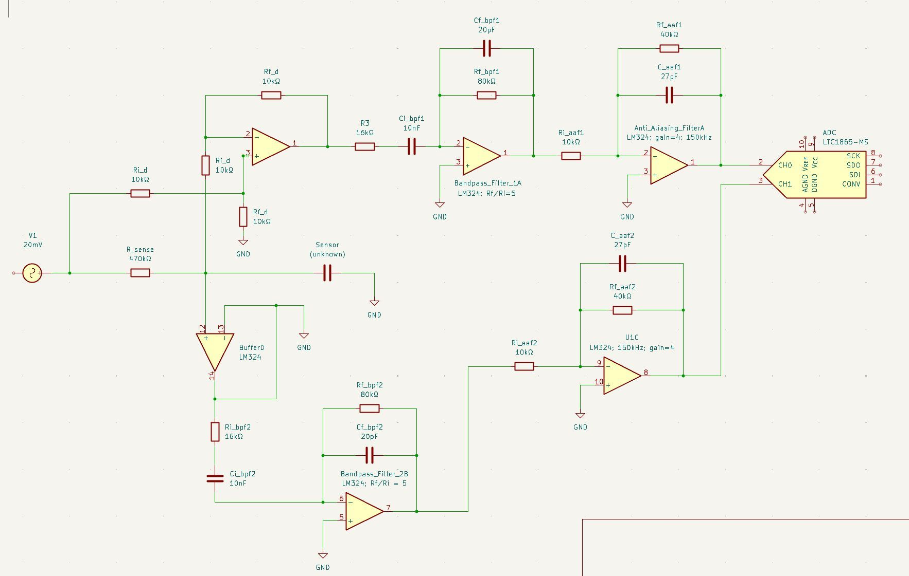
Full KiCad readout draft from the project slide deck, including sensor and reference paths, op-amp stages, and filtering blocks.
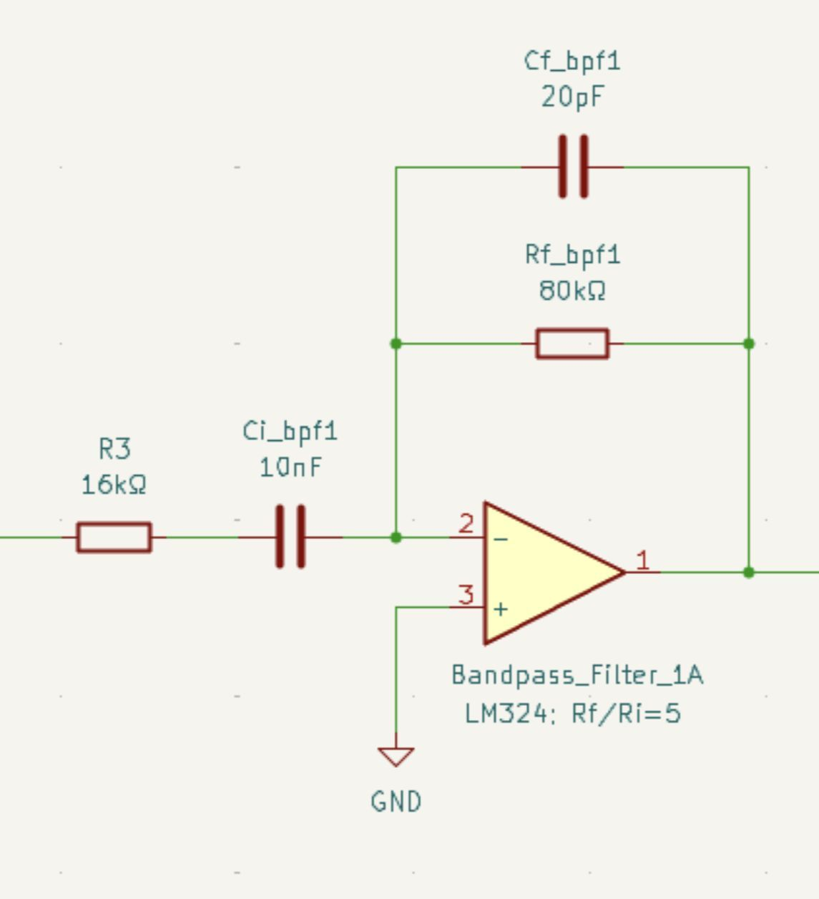
Band-pass filter draft for the 10-100 kHz measurement band, selected to reduce low-frequency noise while preserving the impedance sweep.
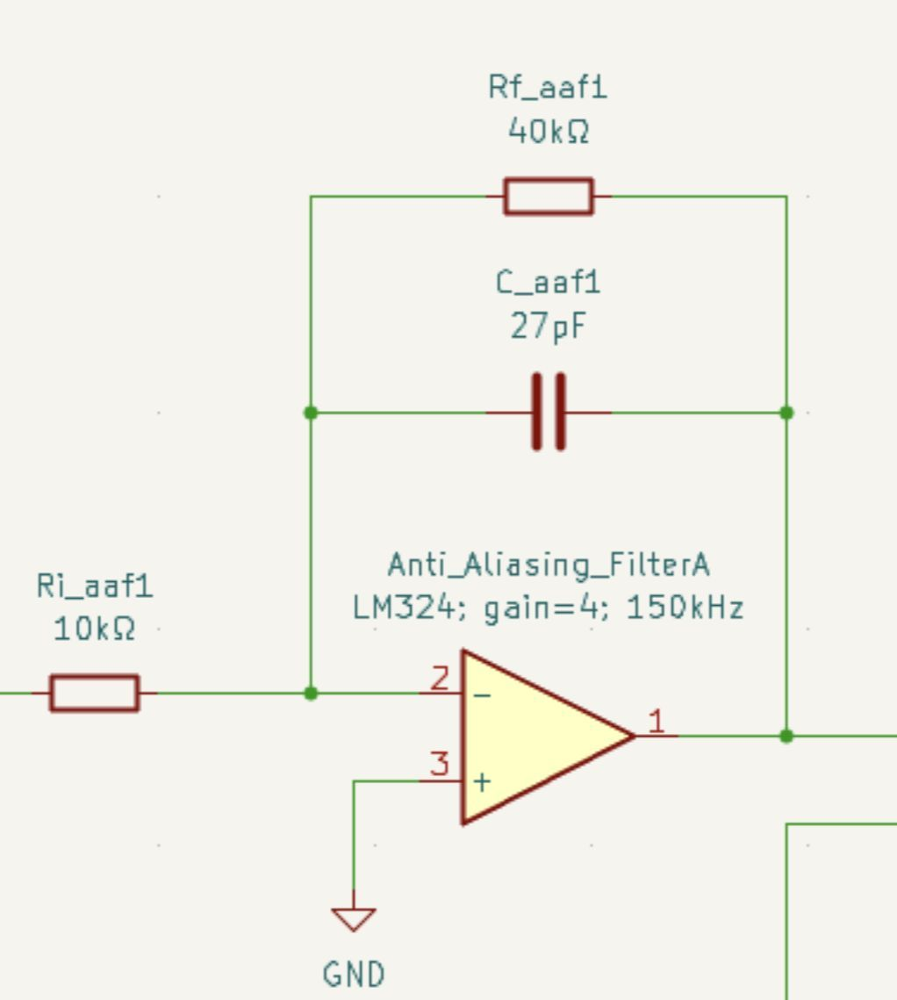
Anti-aliasing filter draft, placed before ADC sampling to prevent high-frequency artifacts from being misclassified as signal.
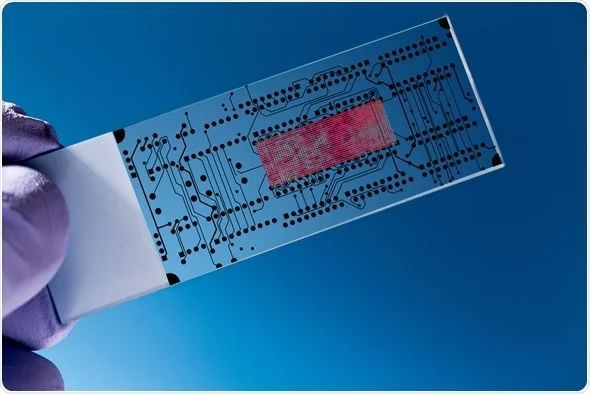
Microfluidic chip reference image from the slide deck, representing the lab-on-chip direction for blood handling and sample preparation.
Report writeup
Biological target. The device targets breast-cancer-associated ctDNA in plasma, with TP53 selected as the representative target sequence. The sensing concept assumes that target ssDNA hybridizes to 24-bp probe sequences at the electrode surface, changing the effective capacitance and impedance of the sensor branch.
Measurement principle. A 20 mV excitation is swept across the measurement band. The sensor impedance is computed from the reference resistor and measured voltage amplitudes:
With no target binding, the modeled minimum impedance is approximately 1.2 kOhm. With ctDNA hybridization near 10 kHz, the electrode voltage is expected to increase by roughly 0.06 mV, giving a modeled impedance near 1.4 kOhm.
Module
Drafted design choice
Reason
R_sense
470 kOhm reference resistor
Creates a voltage-divider style reference for impedance calculation.
Sensor
Electrode capacitance modeled near 1 pF
Represents the small capacitive response expected at the functionalized electrode interface.
Frequency sweep
10-100 kHz
Lower frequencies are noise-prone; higher frequencies risk washing out the biological response.
Analog filtering
Band-pass plus anti-aliasing stages
Reduces 60 Hz, broadband, and aliasing artifacts before ADC digitization.
Readout
Amplitude and phase extraction with digital lock-in style processing
Converts waveform data into impedance curves for calibration and classification.
Post-processing pipeline
The ADC samples the output waveform at each input frequency. The analysis extracts amplitude and phase, computes impedance using R_sense, plots Bode and Nyquist-style responses, and fits the result to an equivalent circuit. The intended model is a Randles-style circuit where Rs represents solution resistance, Rct represents charge-transfer resistance, and Cdl represents double-layer capacitance at the electrode-solution interface.
Known ctDNA concentrations are measured first to build a reference database of impedance curves and fitted physical parameters.
Unknown samples are compared against the calibrated library to estimate ctDNA concentration.
The calculated concentration is scaled to account for sample-preparation losses before risk classification.
Risk thresholds from the report classify low, medium, and high concern, with medium and high results intended to prompt confirmatory diagnostic screening rather than stand alone as diagnosis.
Expected outcomes and limitations
The expected EIS behavior is an increase in charge-transfer resistance and a decrease in double-layer capacitance after ctDNA binding at the electrode surface. Literature examples from microfluidic impedance sensors and DNA biosensors were used to justify the direction of the signal and the calibration strategy.
The report is also explicit about the main limitation: the drafted analog filters focus on 10-100 kHz, while full Randles parameter extraction often benefits from a wider sweep down toward lower frequencies. In this design stage, Rct and Cdl would be partially inferred from assumed/calibrated values rather than fully extracted across the complete ideal EIS range. That makes the next R&D milestone a hardware validation pass, not a claim of clinical readiness.
Competitive and market context
Compared with next-generation sequencing products such as FoundationOne Liquid CDx, this concept trades genomic breadth for speed, cost, and point-of-care simplicity. Compared with tumor-informed monitoring assays such as Signatera, the project is positioned more as a low-cost screening adjunct than a patient-specific recurrence monitoring platform. The target use case is a rapid blood-test add-on that could complement routine care and help flag patients for diagnostic imaging.
NGS-based liquid biopsy is detailed but slow, costly, and lab-dependent.
Protein-focused capacitive biosensors can be rapid but do not directly target ctDNA.
The proposed device emphasizes low-cost EIS hardware, microfluidic preparation, and a mutation-specific ctDNA impedance signature.
Status and next steps
This remains a concept-stage R&D project built from literature review, circuit drafting, microfluidic workflow design, and modeled signal expectations. The next steps would be fabricating the electrode/chip prototype, validating the KiCad readout with known RC loads, testing synthetic ctDNA standards in buffer, then introducing plasma-like matrices to quantify false positives from proteins, lipids, nonspecific DNA binding, and fluid-motion artifacts.
Biomedical instrumentation · Embedded systems · Breathomics · Dec 2025
BreathBiomics Gas-Sensor Array
Portable VOC-sensing platform for noninvasive breath diagnostics. BreathBiomics explores whether low-cost embedded gas sensors can capture exhaled volatile organic compound patterns and turn them into breath signatures for future biomarker discovery, point-of-care screening, and longitudinal health monitoring.
VOC
Breath signature target
MQ + SGP30
CCC prototype sensors
ESP32
Portable architecture path
5-10 s
Baseline + breath windows
Project overview
Built a low-cost breath-analysis prototype to collect VOC-related sensor signals from exhaled breath.
Focused on breath as a noninvasive signal source linked to metabolism, inflammation, microbiome activity, infection, oxidative stress, and respiratory disease states.
Used an electronic-nose strategy: multiple broad, cross-sensitive gas sensors produce a pattern rather than one sensor claiming one exact biomarker.
Designed the platform around baseline collection, breath exposure, recovery recording, feature extraction, and future sensor-fusion classification.
One-line summary: Built an embedded breathomics prototype integrating gas sensors and environmental context to profile exhaled VOC patterns for noninvasive diagnostic applications.
Prototype visuals
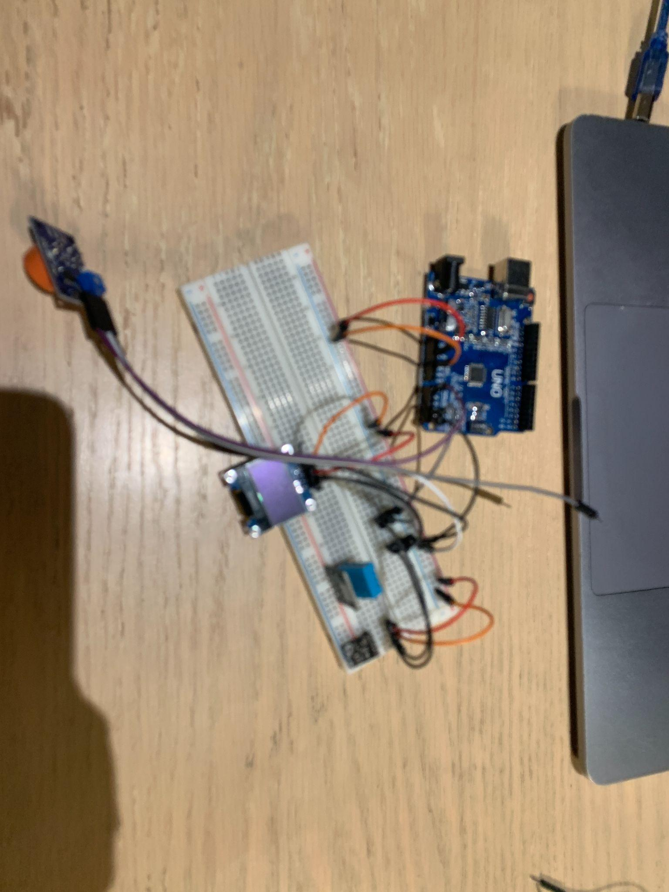
Early hardware prototype with microcontroller, breadboard wiring, and gas-sensor modules for breath VOC data collection.
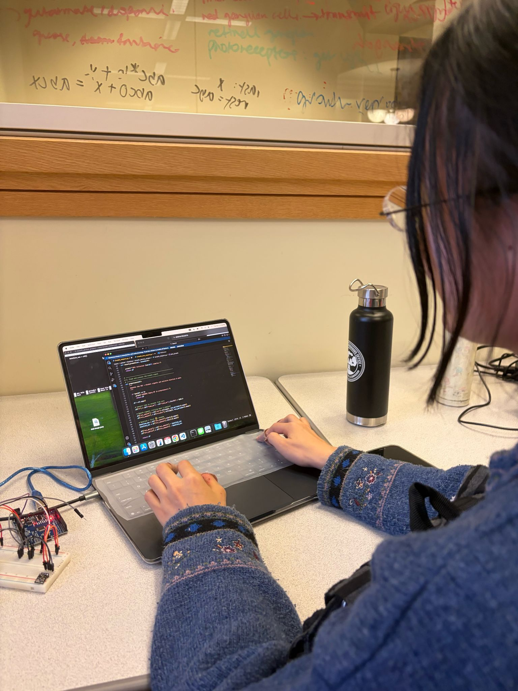
Data-collection workflow for sensor readout, signal processing, and breath-analysis scripting.
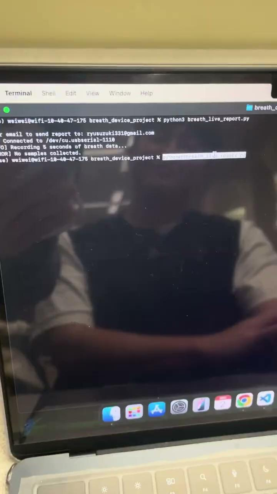
Live reporting script reading sensor data and preparing a breath-analysis report workflow.
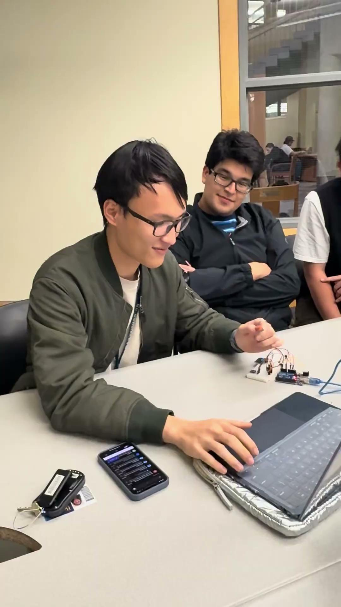
CCC project work session for circuit bring-up, software integration, and presentation development.
Motivation
Traditional diagnostics can require blood draws, imaging, biopsy, or lab-based molecular testing.
Breath analysis is noninvasive, fast, repeatable, and potentially low-cost.
Human breath contains VOCs that can shift with meal state, metabolic activity, gut microbiome activity, lifestyle, respiratory inflammation, infection, and cancer metabolism.
High-end VOC analysis methods like GC-MS are powerful but expensive and less accessible for repeated point-of-care screening.
System architecture
1
Breath input and baseline
The measurement starts with 5-10 seconds of ambient-air baseline collection before breath exposure. This baseline is critical because low-cost gas sensors drift and respond to room air contaminants.
2
Gas-sensor array
The CCC prototype used an MQ-3 alcohol sensor and an Adafruit SGP30 for CO2/VOC-related measurements. The extended architecture generalizes this into an MQ-series array plus a Bosch environmental sensor such as BME680.
3
Embedded controller
The prototype used Arduino-style acquisition for analog and I2C reads. A portable next step uses an ESP32 because it is compact, low-cost, has more processing headroom, and supports Wi-Fi/Bluetooth data transfer.
4
Environmental correction
Temperature, humidity, pressure, and gas resistance contextualize every breath sample. This matters because warm, humid breath can shift gas-sensor outputs even when VOC composition is unchanged.
5
Feature extraction and sensor fusion
Raw readings are normalized to baseline, smoothed, and converted into features such as peak response, delta from baseline, time-to-peak, recovery slope, area under the curve, and humidity-adjusted response.
Measurement workflow
Baseline collection: Record ambient MQ/SGP30/BME680-style readings before the breath sample.
Breath exposure: User exhales into or across the sensing region for a controlled window.
Response recording: Sensor curves are logged continuously while VOCs, humidity, and breath gases interact with the array.
Recovery phase: Sensors return toward ambient conditions; recovery behavior can be used as another signal feature.
Feature vector: Each trial becomes a breath signature vector rather than a single gas reading.
Compare each breath to its own ambient-air starting point.
Delta response, percent change, response ratio
Smoothing
Reduce electrical and sensor noise.
Moving average, median filter, low-pass trend
Environmental compensation
Avoid mistaking humidity/temperature artifacts for VOC patterns.
Humidity-adjusted gas response
Feature extraction
Compress time-series curves into interpretable variables.
Peak, time-to-peak, area under curve, recovery slope
Sensor fusion
Combine cross-sensitive sensors into a pattern-level breath fingerprint.
PCA, clustering, weighted scoring, future ML classifier
Engineering challenges
Cross-sensitivity: MQ sensors respond to broad gas classes, so the system must treat them as pattern sensors rather than molecule-specific detectors.
Humidity interference: Exhaled breath is warm and humid, which can distort gas-sensor readings without environmental context.
Sensor drift and warm-up: MQ sensors need stabilization and repeated baselines before comparisons are meaningful.
Breath sampling variability: Distance, angle, flow rate, and duration can all change signal magnitude.
Clinical translation: The platform is an engineering proof-of-concept, not a diagnostic device; controlled VOC standards and clinical datasets would be required for disease classification.
Next steps
Add a controlled breath chamber with a mouthpiece, one-way valve, defined volume, and moisture trap.
Use a flow sensor or pressure channel to standardize breath delivery.
Calibrate against known VOC standards under controlled humidity and temperature.
Build a wireless ESP32 dashboard for live curves, breath-event detection, and CSV export.
Collect repeated controlled datasets for PCA, clustering, and future machine-learning classification.